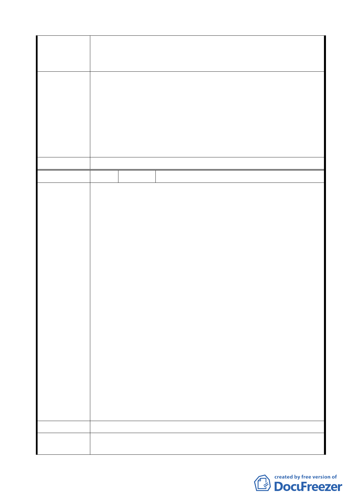

建議計畫範圍納入八公尺計畫道路，並闢建具特色之登山道
建議辦法 路，與「發現之旅」社區已開闢道路銜接，完成後木柵路可通
發展局回應
往辛亥路，道路系統完整形成，方便周邊居民通行。
1.本陳情地點不在本案計畫範圍內，且目前已是未開闢之計畫道
路，無涉都市計畫變更事宜。
2.有關登山道路部份，本案都市設計管制要點（二）國小用地設
計管制第 4 點規定「西側坡地應配合生態教學，且登山步道口
應與校園建築相融合。」以及第 5 點「西側坡地應配合生態教
學及登山步道，作景觀步道之設計。」因此，建議後續俟元利
建設取得保護區土地後，由本府產業發展局及教育局等權管單
位協助進行該步道整體規劃。
委員會決議 依市府（發展局）回應內容辦理。
編號
陳情理由
3 陳情人 華興里辦公處-周德斌里長
環境方面：
一、保護區暴雨量對開發之影響？
二、基地內（原衛工處箱涵之維護）？
三、保護區為何併入計畫範圍，同一街廓住宅區得考量併入計畫
範圍？
四、仙跡岩登山步道是否配合開闢？
五、第 9 頁圖五所示最右方橙色圈處開發時，依山坡地開發原則
檢討？
交通方面：
一、現有巷道與永建國小使用關係：
1.住三單獨使用？
2.永建國小行政車輛進出，學童由大門進出？
3.消防救災道路？
二、建案開發對交通影響，建議：
1.光輝路 9 米計畫道路改為 12 米？
2.下崙路 5 米計畫道路改為 10 米？
3.木柵路 378 巷原 8 道路開闢接通下崙路？
三、下崙路機關用地併入本案細部計畫通盤檢討？
整體開發原則：
一、仙跡岩保護區之私有地徵收以方便統一規劃？
二、周遭舊有建築可否放寬容積，以便日後重新建設？
三、未來人口密度及消費能力增加，對於里內之住宅可否變更成
商業區？
四、永建國小舊有校地如何規劃使用？
五、現有停車位不足是否加蓋停車場以供里民停放？
建議辦法
發展局回應
--
環境方面：
一、保護區暴雨量對開發之影響：為維護生態保育及水土保持，
15